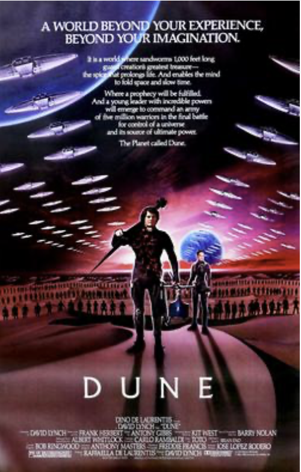
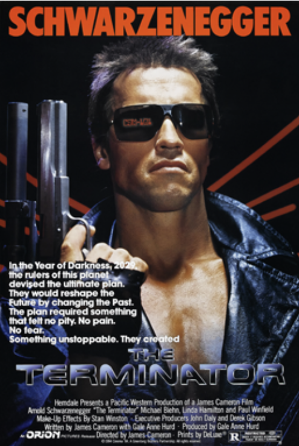
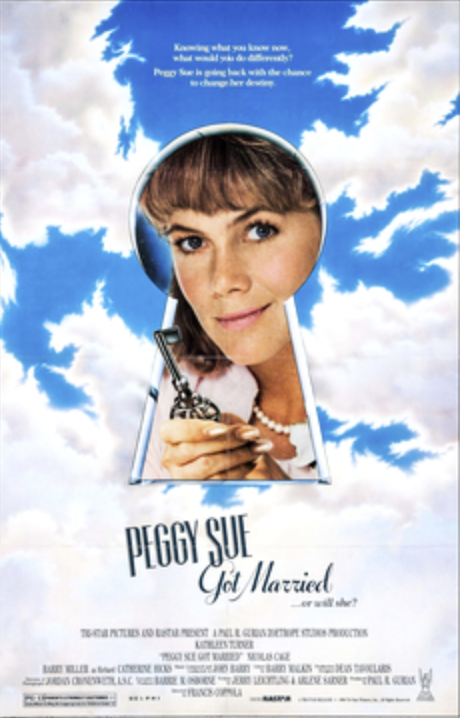

I loved the other worldly effects in the movie. This movie was an asortment of 'coming of age' and science fiction. The characters were very believable.
My only complaint about this movie was the casting for the Character Paul Atredis. I thought he could have been taller and stronger.

This Science Fiction movie was tailor made for Arnold Schwarzenegger! While the talking parts were minimal for his character, Arnold made the few of them so memorable that they will live on forever. One of his fans favorite lines was "I'll be back!". Add to that was his great body builder physique that made his character extremly believable!

Starring Kathleen Turner and Nicolas Cage
A 1986 American fantasy comedy-drama directed by Francis Ford Coppola and starring Kathleen Turner as a separated woman who faints at her 25th high school reunion and wakes up back in 1960 during her senior year.
One of the funniest movies with some tender moments. The title of the film and the name of the main character refer to the 1959 song by Buddy Holly. When I'm in a need for a good chuckle, this is always my go too!